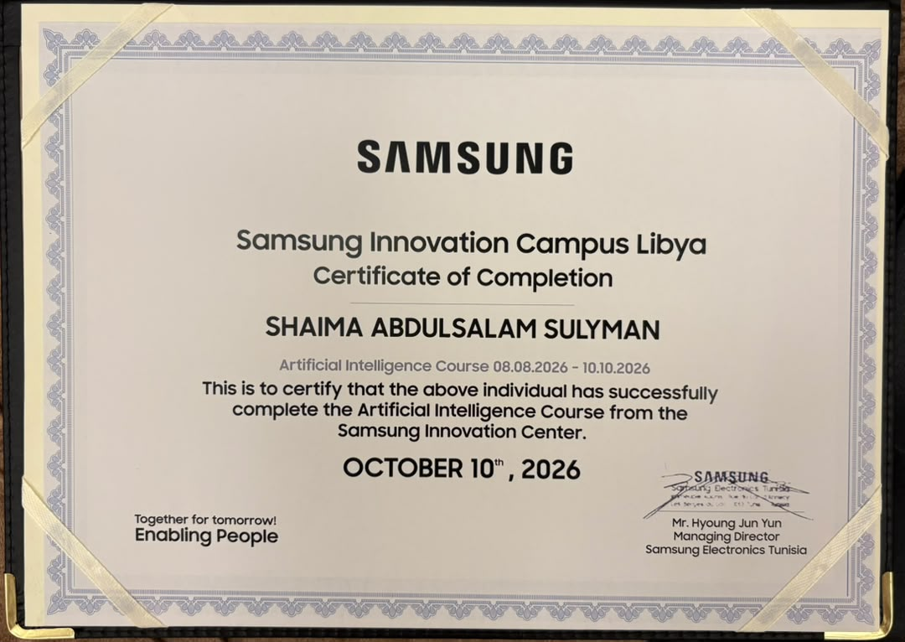

About me
I'm an Artificial Intelligence and IT student with a background in machine learning, data analysis, computer vision, and robotics design. Right now I'm focusing on data science and data analysis, and I built this website by hand while learning web development.
Education
B.Sc. in Artificial Intelligence
Libyan International University, Benghazi, Libya
February 2023 – February 2027 (expected)
Relevant coursework:
Experience and achievements
Co-Founder and Head of Developers, LIMU AI and Robotics Team
- 3rd place in the Libyan Collegiate Programming Contest (LCPC)
- Best Robot Design Award at the Arab Robotics Championship Qualifiers
- Represented Libya at the Arab Robotics Championship in Tunisia
Project Manager, Medicare Clinical Appointment Reservation System
Led a team to design and develop a web-based clinical appointment system using Agile methodology. The project was ranked Best Project among all submissions.
Mediterranean Future: Addressing Global Challenges
Selected among the top 100 students in the MENA region for an honors course by Luiss University and 11 other Italian universities.
AI and Information Warfare Program (Aqaba, Jordan, 2024)
Completed training in AI applications and cybersecurity concepts in an international environment. See photos from the trip
Volunteering
- Organizing committee member at Regulus, helping run a local robotics competition
- Volunteer at university scientific days, such as at the University of Balagrai in Benghazi
- Volunteer at I-TEX Expo Libya and the MENA Project Expo
- Member of the LIMU STEM Design Team
Certificates
Click a certificate to see it full size.




See all my certificates on LinkedIn.
Outside the lab
When I'm not training models, I'm usually on inline skates, drawing, working on graphic design, or practicing one of the languages I'm learning. I'm also interested in journalism.